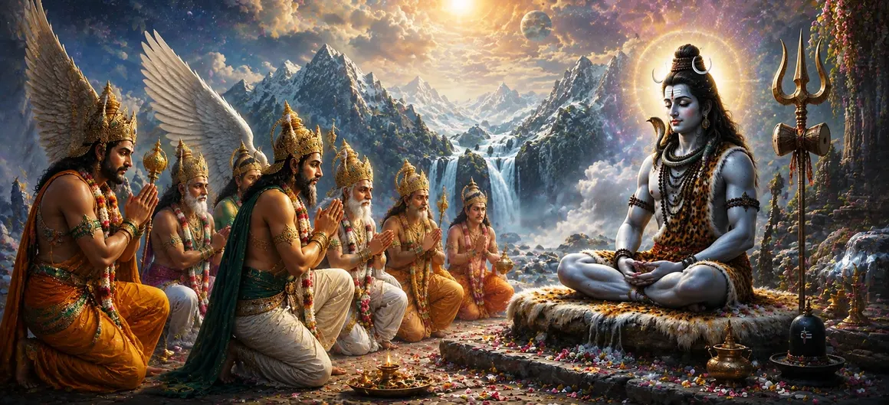

As Sati continued her intense penance and unwavering devotion to Lord Shiva, the gods observed the unfolding of a divine plan. They knew that the union of Shiva and Sati was not merely a personal matter but a cosmic necessity. The balance of the universe depended upon their sacred marriage, for it would pave the way for future events destined to protect the worlds and uphold righteousness.
The gods understood that Lord Shiva, absorbed in deep meditation and detached from worldly affairs, had no desire for marriage. Yet they also recognized that his union with Sati was ordained by destiny and essential for the welfare of creation. Therefore, they resolved to take steps that would help bring about this divine event and fulfill the will of the Supreme.
The devas reflected upon the future of the universe and the challenges that lay ahead. They understood that certain powerful forces could only be overcome through the divine purpose that would emerge from the union of Shiva and Sati. This realization filled them with urgency and strengthened their resolve to assist in bringing about the sacred marriage.
The gods admired the sincerity of Sati’s penance and devotion. Her dedication had already proven her worthiness to become the consort of Lord Shiva. Seeing her steadfast faith, the celestial beings became convinced that the time had come to help fulfill the destiny that had been prepared by divine will.
Although they desired the union of Shiva and Sati, the gods knew that such a sacred event could not be forced. It would require wisdom, humility, and proper guidance. Therefore, they began discussing how best to approach the matter and seek a path that would be pleasing to Lord Shiva himself.
Filled with hope and devotion, the gods placed their trust in the divine plan. They believed that the union of Shiva and Sati would bring immense blessings to all beings and restore harmony throughout creation. With this faith, they prepared to take the next steps toward accomplishing their sacred objective.
The union of Shiva and Sati was essential for maintaining harmony in creation.
Their marriage had been ordained by the will of the Supreme.
The divine union would bring blessings to gods, sages, and all beings.
The devas knew that every event in creation unfolds according to a higher purpose. Although obstacles appeared before them, they remained confident that destiny would guide Shiva and Sati toward one another. Their role was not to control events but to assist in fulfilling the divine will.
The gods understood that sacred events occur only at the proper time. Even though Sati’s devotion and penance had reached extraordinary heights, patience was still required. Therefore, they waited for the right opportunity to approach Lord Shiva and encourage the fulfillment of his destined union with Sati.
The stage was now set for one of the most important events in the Shiva Purana. Sati’s devotion, the concern of the gods, and the divine purpose behind creation were gradually converging toward a single goal. The chapters ahead reveal how the devas act to bring Lord Shiva into the unfolding drama of destiny.
The actions of the gods reveal an important spiritual truth: divine purposes often involve the cooperation of many beings. While destiny is guided by the Supreme, individuals are still called to participate in its fulfillment through wisdom, faith, and selfless effort. The devas sought Shiva’s marriage not for personal gain but for the welfare of all creation.
The story illustrates that destiny and effort are not opposites but partners. Sati’s devotion, the concern of the gods, and the unfolding will of the Supreme all worked together toward a common purpose. This harmony demonstrates how divine plans are often realized through both spiritual dedication and righteous action.
The thoughts of sages, gods, and celestial beings were now centered upon a single hope—the union of Shiva and Sati. What appeared to be a personal relationship was in reality a cosmic event whose influence would extend throughout all realms of existence.
"Devotion becomes complete when faith is joined with perseverance. Through unwavering penance and pure love, Sati demonstrated that sincere dedication can move even the hearts of gods and shape the destiny of the universe."
Sati’s devotion matured into sacred penance, while the gods worked to fulfill the divine plan that would unite her with Lord Shiva. Their efforts were guided by the understanding that this union was essential for cosmic harmony. The next chapter reveals the long-awaited moment when Lord Shiva responds to these prayers and accepts Sati, bringing the divine destiny of both souls closer to fulfillment.